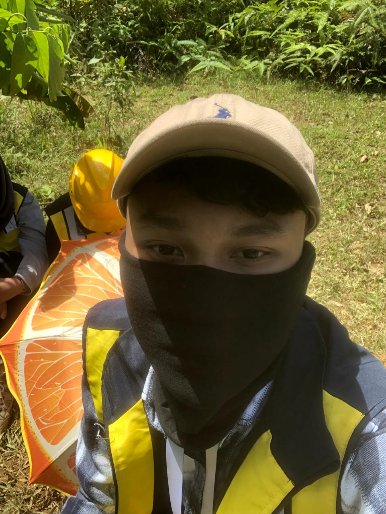

Selamat Datang di WebGIS Kota Bandung
Platform Pemetaan Digital Terpadu
WebGIS Kota Bandung adalah platform pemetaan interaktif yang memudahkan Anda menjelajahi data geografis Kota Bandung secara real-time. Dapatkan akses ke peta interaktif dengan berbagai layer informasi, pantau kondisi cuaca terkini, baca berita terbaru tentang pembangunan kota, dan jelajahi galeri foto tempat-tempat wisata terkenal di Bandung.
Peta Interaktif
Jelajahi peta Bandung dengan berbagai layer dan pencarian lokasi
Data Cuaca Real-time
Pantau kondisi cuaca terkini di Kota Bandung
Berita & Galeri
Baca berita terbaru dan jelajahi destinasi wisata populer
Data Cuaca Real-time UPI Bandung
Cuaca UPI Bandung
Memuat...Terasa seperti
--°C
Peta Interaktif Kota Bandung
Peta interaktif yang menampilkan data spasial Kota Bandung dari berbagai sumber.
Informasi & Statistik Kota Bandung
Data dan fakta tentang WebGIS Kota Bandung
Total Layer
Layer data geografis tersedia
Data Points
Titik data terintegrasi
Pengguna Aktif
Pengguna terdaftar
Update Harian
Pembaruan data real-time
Download
Data telah diunduh
Coverage Area
Luas area Kota Bandung
Berita & Galeri Kota Bandung
Liputan terbaru dan dokumentasi visual

Pembangunan Tol Lingkar Selatan
Proyek tol lingkar selatan terus berkembang dengan target penyelesaian 80% di akhir tahun 2026.
Baca Selengkapnya
Program Penghijauan Kota 2026
Pemerintah kota menargetkan penanaman 50,000 pohon untuk meningkatkan kualitas udara.
Baca Selengkapnya
Ekstensi Jalur LRT Bandung
Perluasan jalur LRT mencakup 3 stasiun baru yang akan menghubungkan area Cimahi dengan pusat kota.
Baca Selengkapnya
Peluncuran Smart Campus Initiative
Universitas terkemuka di Bandung meluncurkan inisiatif kampus pintar dengan integrasi teknologi GIS.
Baca Selengkapnya
Gedung Sate
Landmark bersejarah Kota Bandung

Lembang Panorama
Destinasi wisata alam

Alun-Alun Bandung
Pusat kegiatan masyarakat

Kawah Putih
Danau kawah unik

Braga Street
Kawasan bersejarah

ITB Ganesha
Institut Teknologi Bandung
Tentang Pembuat
Mengenal kreator WebGIS Kota Bandung

Fadil
Mahasiswa SAIG - Semester 4
Seorang mahasiswa Program Studi Sains Informasi Geografi (SAIG) yang sedang menjalani perjalanan akademik menuju semester 4. Saat ini fokus pada pembelajaran pembuatan WebGIS sebagai bagian dari eksplorasi di bidang teknologi geospasial.
Antusiasme Pribadi Gue
Soundtrack Pengembangan
Dikembangkan sambil enjoy dengerin album yang menurut gue bagus:
Perunggu
Band Pulang Ngantor
Hubungi Kami
Sampaikan pertanyaan atau masukan Anda
Alamat
Yang Penting Ada Casan Kopi + Signature Sebungkus
Bandung, Jawa Barat 40123
Telepon
0821-2361-1848
ryyfary@gmail.com
fadilfary17@upi.edu
Jam Operasional
Tutup Kalo Sholat 5 Waktu